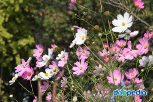

[common cosmos]
요약 쌍떡잎식물 초롱꽃목 국화과의 한해살이풀.
코스모스
멕시코가 원산지이며 관상용으로 흔히 심는다. 줄기는 높이가 1∼2m이고 윗부분에서 가지가 갈라지며 털이 없다. 잎은 마주나고 2회 깃꼴로 갈라지며, 갈라진 조각은 줄 모양이다. 꽃은 6∼10월에 피고 가지와 줄기 끝에 두상화(頭狀花:꽃대 끝에 꽃자루가 없는 작은 꽃이 많이 모여 피어 머리 모양을 이룬 꽃)가 1개씩 달린다. 두상화는 지름이 6cm이고 6∼8개의 설상화와 황색의 관상화로 구성된다. 설상화는 색깔이 연분홍색·흰색·붉은색 등 매우 다양하고 꽃잎의 끝이 톱니 모양으로 얕게 갈라지며, 통상화는 꽃밥이 짙은 갈색이고 열매를 맺는다. 총포 조각은 2줄로 배열하고 달걀 모양의 바소꼴이며 끝이 뾰족하다. 열매는 수과이고 털이 없으며 끝이 부리 모양이다. 한방에서는 뿌리를 제외한 식물체 전체를 추영(秋英)이라는 약재로 쓰는데, 눈이 충혈되고 아픈 증세와 종기에 사용한다. 코스모스란 그리스어의 코스모스(kosmos)에서 유래하였는데, 이 식물로 장식한다는 뜻이다. 비슷한 종류로 꽃이 황색인 것을 노랑코스모스(C. lutea)라고 한다.